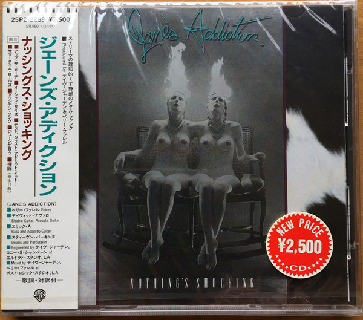

Favorite Bands And Musicians
My list of favorite bands and musicians can change month to month. For April 2024 I pick the following bands/musicians:
- Glenn Danzig of Danzig, Misfits and Samhain
- Red Hot Chili Peppers
- Jane's Addiction
Favorite Albums
My favortie albums change from month to month as well.
- Danzig II - Lucifuge
- Red Hot Chili Peppers - Blood Sugar Sex Magic
- Jane's Addiction - Nothing's Shocking
Favortie Songs
Finally, my favortie songs change from month to month.
- Blood And Tears - Danzig
- Ted Just Admit It - Jane's Addiction
- If You Want Me To Stay - Red Hot Chili Peppers